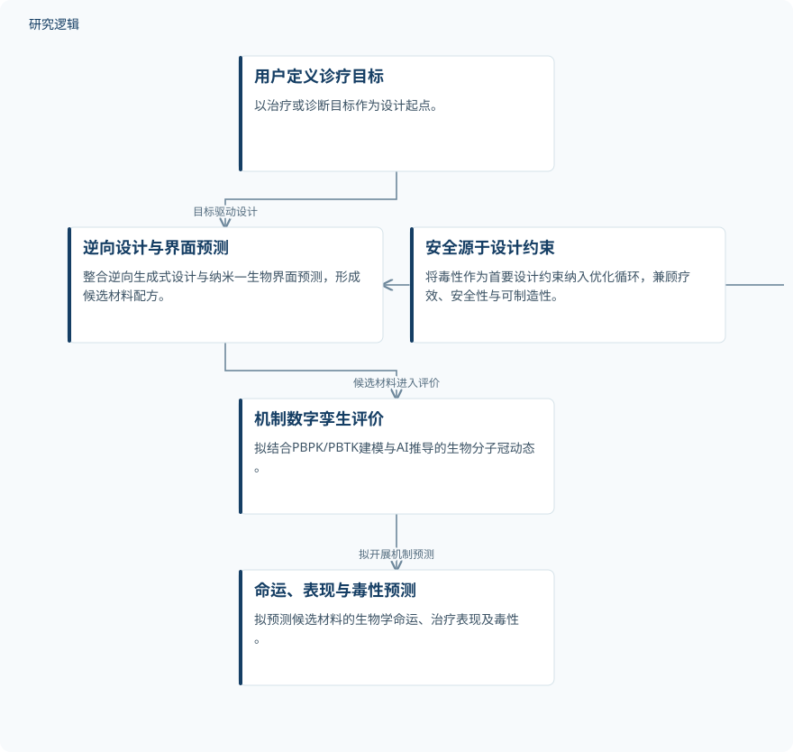

摘要解读
人工智能驱动的纳米材料逆向设计：融合动态生物分子冠与安全设计的数字孪生框架
AI-driven inverse design of nanomaterials: A digital twin framework coupling dynamic corona intelligence and safe-by-design architecture for next-generation nanomedicine
解读更新 2026-11-10 13:40 · 依据公开摘要整理，未核验全文细节
纳米材料如何从“先制备、再评价”转向围绕诊疗目标开展设计，并把安全性提前纳入优化？本文摘要提出NanoTwin-AI概念框架，阅读价值在于理解逆向设计与数字孪生如何被组织起来，而非获得已经验证的性能结论。
文章目录
临床转化的难点：材料表现难以提前预测
纳米材料在治疗与诊断中具有潜力，但摘要指出，依赖经验的开发流程难以准确预测其生物学命运、毒性及治疗表现，限制了临床转化。这里的问题不仅是找到一种候选材料，还包括在设计阶段理解材料进入生物体系后可能产生的行为与后果。
从诊疗目标出发，连接逆向设计与机制模拟
NanoTwin-AI被提出为一个AI/机器学习概念平台：以用户定义的治疗或诊断目标为起点，通过相互连接的计算引擎，面向疗效、安全性和可制造性共同优化纳米材料配方。框架拟将逆向生成式设计、纳米—生物界面预测，以及从生物学命运到功能的机制模拟整合到统一架构中。
按照摘要描述，候选材料随后将在机制数字孪生中接受评价；该数字孪生拟结合PBPK/PBTK建模与AI推导的生物分子冠动态，预测生物学命运、治疗表现和毒性。安全源于设计（Safe-by-Design）则被直接嵌入优化循环，使毒性成为首要设计约束，而不只是下游验证事项。
依据摘要整理的NanoTwin-AI概念流程


仅展示摘要明确描述的拟议模块及其关系，不代表已实现系统或经过验证的效果，也不是论文原图。
下载 SVG图示关系说明
实线表示相邻阶段的信息流，虚线表示跨阶段联系或反馈。
用户定义诊疗目标 → 逆向设计与界面预测：目标驱动设计；逆向设计与界面预测 → 机制数字孪生评价：候选材料进入评价；机制数字孪生评价 → 命运、表现与毒性预测：拟开展机制预测；安全源于设计约束 → 逆向设计与界面预测：安全约束进入优化
摘要报告的是概念框架，而非性能验证
摘要的主要产出是NanoTwin-AI的概念性架构，不能将其拟实现的预测与优化能力视为已经证实的效果。作者还指出未来计算纳米医学面临的关键挑战：预测性生物分子冠基础模型、动态生物持留数字孪生，以及疗效与安全性的同步协同优化。
预测可靠性与验证边界仍需查阅正文
仅凭当前摘要，无法判断框架是否已完成可运行实现，也无法确定所用材料或生物学样本的规模、数据来源、比较基线与验证范围。摘要未提供预测误差、毒性评估结果或临床转化证据，因此不能据此判断其相较既有方法的优势；这些信息未在摘要中报告，不等于论文没有开展相关工作。
阅读启发：关注安全约束如何进入设计决策
阅读启发：后续阅读可重点追问，诊疗目标如何转化为设计条件，生物分子冠动态如何连接材料特征与体内命运，以及疗效、安全性和可制造性发生冲突时如何取舍。对于关注逆向设计和数字孪生的读者，更值得辨析的是各模块之间的信息联系与证据支撑，而不是把框架愿景当成成熟工具。
以上为本站阅读启发与建议，不是论文已验证的结论。